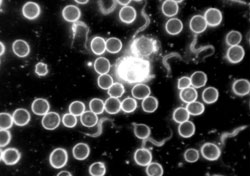
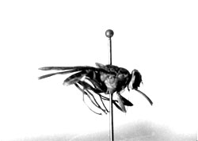
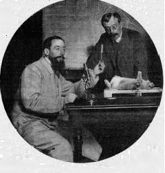
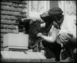
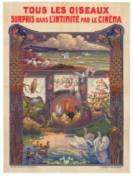
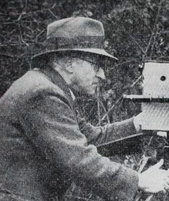

It is not entirely clear what, if any, connection Charles Urban retained with the company that still bore his name, but it is
clear that it had to all intents and purposes been bought out by the French company, Éclipse, that had started life as its subsididary.
Urban, for his part, was using the money from the sale of Urban Trading, to concentrate on The Natural Colour Kinematograph Company,
in association with G. A. Smith, which was to produce films in the natural colour system Kinemacolor, developed
with Smith in 1908, and on his new company Kineto, intended to be more specifically devoted to educational, industrial and
scientific films than Urban Trading had been.
Urban and F. Percy Smith continued in 1909 to capitalise on the success of the 1908 film The Acrobatic Fly. For Urban's new
company Kineto, in a series entitled "Urban Science", Smith made a further films in a similar genre during the year focusing on another
commonly hated insect - the spider. The part-animated one-minute film Urban Science: To Demonstrate How Spiders Fly was another
plume in Smith's cap in the year before his "fly" films exploded onto the US market. .
F. Percy Smith, To Demonstrate How Spiders Fly (Urban, 1909)
While the interests of the producer (Charles Urban) and the film-maker (Smith) were in a sense the same and the two formed a
a very successful team, there was an important difference between them that would be very clearly reflected in their subsequent
careers. Smith was a dilettante, The American-born Urban was essentially a businessman, kept a weather eye on the market, especially
the US market, where he would dearly have liked to establish himself.
This difference is very clearly reflected in the film The Fly Pest made, as a companion piece to The Acrobatic Fly
for the Urban Trading Company some time in 1908-1909 before the development of the Kineto series. The nature of this film is well
indicated by a review in The Moving Picture World that accompanied its 1910 US launch:
This series of pictures shows flies (as big as Plymouth Rock hens, as they appear on the screen) laying eggs in putrid meat;
the eggs in white masses: the maggots in writhing heaps as they emerge from the eggs, and in different stages of their growth
as maggots, until they burrow in the dirt to enter the pupa state; the pupa; (or grubs) themselves, one day later; flies emerging
from the filth, at first wingless; then the perfect adult fly. Then follow pictures, stretching across the screen, of a fly taking
a sip of honey from the point of a needle, showing the action of the proboscis, very like an elephant's trunk in miniature; of the
tongue, and of the foot, also enormously enlarged, and with every microscopic hair distinct. The second act of this little life-history
is entitled: "How Flies Carry Contagion." In it these scenes follow one another in rapid succession, so that the most thoughtless
spectator cannot fail to grasp their full significance: Flies swarming on putrid fish: crawling over lumps of sugar: in a cuspidor;
on the nipple of a baby's feeding bottle; and, last of all, a pretty baby placidly sucking the mouthpiece from which the flies have
just departed.
In December 1909, a group of thirty physicians, educators, and social workers convened in New York City to watch a film. Among those
gathered were Dr. Daniel D. Jackson, a renowned public health expert, and Edward Hatch Jr., long-time friend of Jackson and then
chairman of the Fly Committee of the Merchants' Association of New York City. George Kleine, president of the George Kleine Optical
Company, Urban's US distributors, had organised the event on his behalf following the release of . This small
audience gathered in Kleine's office that day was already well aware of the fly's reputation as a carrier of typhoid and other
intestinal diseases. In fact,as the American Civic Association (ACA) reported a year later, the fight to exterminate the house
fly was well underway long before Urban's New York debut, due in large measure to Dr. Jackson's propaganda efforts. Neveertheless
Hatch and Jackson hoped to exploit the popularity of moving pictures in order to communicate their public health message to wider
and more diverse audiences while Urban and Kleine hoped to exploit the interest of these concerned citizens to promte the success
of Urban's film in the US and substantiiate Urban's claims to be promoting the cause of educational and public-service film-making..
F. Percy Smith, The Fly Pest (Urban, 1909)
Another popular science films produced by Smith for Kineto in the year were a two-part Chemical Portraiture (Chemical
Reaction and Chemical Experiments) which appeared in June 1909, The film London's Ne Museum that came out on
1 July following the official opening of the Science Museum on 26 June 1909, the Science Collections of the museum in Exhibition
Road (the Art Collections becoming the Victoria and Albert Museum).
The British were by no means the only ones to interest themselves in the scientific and educational uses of film nor were they the only ones to interest themselves in
micro-cinematography. Indeed the French interest might justly be described as rather more "serious". While the films of the amateur Percy Smith tended to be mocked by serious
scientists during most of his lifetime (they were only willing to accord him appropriate honours after his death), many of the early French pioneers had been accredited scientists
and this tradition continued. The pioneer in micro-cinematography was a certain Dr. Jean Comandon who, following in the footsteps of Jules-Étienne Marey and Georges Demenÿ, pioneers
in the domain during the 1890s, began his work at the Hôpital Saint-Louis in Paris in 1908, studying under a certain Dr. Paul Louis Gastou (1864-1941), himself an early pioneer of
micro-cinematography, and whose first films (of the parasites implicated in the veneral disease syphilis) were submitted to in association with his doctoral thesis entitled De l'usage
clinique de l'ultra-microscope en particulier pour la recherche et l'étude des spirochètes (defended August 1909).
By this time the ubiquitous Charles Pathé had become involved. The lobby for educational film was particularly strong in France,
sometimes associated tithe the lobby for the "art film" (Pathé's friend Edmond Benoît-Lévy was an important mover and shaker in
both fields), sometimes associated with Catholic polemicists; one of the principal advocated of educational cinema was Guillaume-Michel
Coissac, editor since 1903 of the journal Le Fascinateur, a cinema-journal produced by the very Catholic publishing-house
La Bonne Presse. Such internal pressures combined with the possibilities of foreign competition (Since 1906 Pathé had become increasingly
aware of the work of Urban) were sufficient incentives for Pathé to inteerst himself in the work of Comandon and it was he who
(while carefully excluding Gastou from the operation) provided the doctor at Vincennes with the specialised laboratory facilities
needed for his work. Comandon was another of those who believed that the cinematograph would "soon assert itself as a marvellous
method of instruction".
screening of Jean Comandon's films at the King's College Hospital Medical Society from Illustrated London News (5 November 1910)
I am unable to comment with any great precision ofn the subject of the two 1910 films below but, to judge from the elements of
commentary that accompany them, one is a film of the syphilis parasites (Spirochaeta pallida) and the other of a related
parasite that infects chickens (Spirochaeta gallinarum). These films, originally submitted to the Academy des Science in
Paris in 1909 were, following the presentation his thesis, projected by Comandon (accompanied by a talk) at several Paris hospitals
during the same year and for the « Société française de photographie » on 17 December 1909, after which, they
were seemingly also shown abroad - the photograh shows a projection at King's College Hospital in London - and in public cinemas
in 1910, although one imagines that the audience must at this stage have been a relatively limited one. An eight-minute film (in
twelve tableaux) appeared in the Pathé catalogue in 1909-1910 as La Cinématographie des microbes. some of these films (Spirochaeta
gallinarum, Spirochaeta pallida and Sang humain) survive in the Gaumont archives:
Other attractions included in La Cinématographie des microbes were Mouvement amiboïde d’un leucocyte (a white blood-globule),
Sang d’ovipares (blood of a bird, a frog and a fish), Sang humain, Spirochètes de Vincent (Microbes observés
dans les lésions ulcéreuses des muqueuses (which I shall not trouble to try and translate but they are (bacilli typically causing
infections of the mouth and teeth), Trypanosoma Brucei (microbes in the intestine of a mouse), Trypanosoma Lewisi (microbes
commonly found to infest the rats of Paris) and Fièvre recurrente (microbes here said to be engendered only amongst those of "negro"
race). Particularly terrifying is the expannded version of this last, Le Microbe de la fièvre récurrente:
Les fièvres récurrentes sont des maladies s’attaquant à l’homme, en particulier dans le sud de la Russie et dans l’Afrique. La
fièvre russe est due à Spirochœta Obermeyeri qui est inoculé par une punaise. La fièvre africaine est due à Spirochœta Duttoni
inoculé par une tique. On apprécie facilement sur cette bande, les dimensions de ces spirochètes et la souplesse de leurs
mouvements. On observe leur façon de s’unir bout à bout pour donner des formes géantes. Au moment de l’agglutination, on remarque
la viscosité de ces microbes.Ils agglutinent, en même temps qu’eux, les globules rouges avec lesquels ils forment des pelotons
grouillants, particulièrement nets dans certaines vues.
Recurrent fevers are illneses that attack man, particuarly in the south of Russia and in Africa. The Russian fever is due to
Spirochœta Obermeyeri innoculated by a bedbug. The African fever is due to Spirochœta Duttoni inncoulated by a tick. One appreciates
particularly in this short film the size of the spirocetes and the suppleness of their movements. One observes their fashion
of joining up end to end to end up as giant shapes. At the moment of agglutination, one notices the viscosity of the microbes.
At the same time the red globules also agglutinate with which they form swarming groups, particularly clearly seen in certain views.
Don't say you haven't been warned!
Not a very sprightly competitor to Smith's acrobatic bluebottle, but decidely more lethal, the tsé-tsé fly, carrier of the trypanosomes
that caused "sleeping sickness", one of the most deadly of the fièvres recurrentes, is pictured in Trypanasoma Brucei.
Dr. Jean Comandon, Tryanosoma Lewisi and Trypanosoma Brucei (Pathé, 1909)


As in the case of Smith, the renascence of interest in early cinema has not entirely neglected Comandon, at least in his native
country, and the French lament the relative lack of interest that his films have aroused. Below I provide a link to a recent (2012)
French radio programme devoted to his work:
As for contemporary opinion, those in a position to understand the films were highly enthusiastic. The films were presented by
physiologist Albert Dastre (1844-1917) at the Académie des Sciences on 26 October 1909 and some days later (24 November) La
Presse médicale waxd lyrical on the subject:

Dr.Jean Comandon and Albert Dastre
Il est malheureusement impossible, si l’on n’a pas vu les projections de M. Comandon, de se faire une idée de la vie de ces préparations.
À voir les micro-organismes évoluer, virer, volter au milieu des cellules normales, les spirochètes dérouler leurs spires, onduler
dans le liquide, se cacher derrière des globules sanguins ou des buissons de fibrine, tourner comme en cage dans un globule rouge,
se visser les uns dans les autres, se séparer pour se rejoindre encore ; à voir les trypanosomes aller et venir dans tous les sens,
déployer leur membrane ondulante, bousculer à coups rapides les globules sanguins, tandis qu’à côté les globules blancs poussent
paresseusement leurs prolongements proto¬plasmiques, étalent lentement leurs pseudopodes, on a l’impression que l’on est en présence
d’un monde inconnu, monde de l’infiniment petit, aussi varié, aussi complexe que la Nature visible à nos yeux. Quand on songe à tous
les progrès que fait naître chaque jour l’invention de simples méthodes, de nouvelles techniques, on ne peut s’empêcher de prédire
que l’ultramicroscope, en saisissant ainsi la vie sur le vif amènera certainement des découvertes importantes, et que le cinématographe
s’imposera bientôt comme un merveilleux moyen d’enseignement.
It must nevertheless be confessed that the deeply serious work of Comadon is rather "caviare for the general" and, even though
we lack Comandon's own commentary (he was apparently a man of considerable personal charm and a very good speaker) is not altogether
as entertaining as the work of the eccentric British amateur F. Percy Smith who himself said of his work that he "always endeavoured
to administer the powder of instruction in the jam of entertainment". Comandon would however, during the course of his collaboration
with Pathé (1909-1924) and of his long association with scientific and educational cinema (until 1960), produce some rather more
accessible, if not altogether "jammy", films to be considered in due course in their place. During his lifetime (1877-1970), Comandon
would produce over 400 films.
Natural History
Although he had now retired to pursue his academic studies, F. Martin Duncan's presence continued to be felt, and would for
many years to come. Contest Between A Wasp, Caterpillar And Spider and The Life of a Wood Ant, both in June, and
Black and White Rats And Mice in October were all simply extracted from his earlier films, some made as early as 1903.
F. Percy Smith had not really yet begun to fill Duncan's vacant hshoes and few other natureal history films were made in the year.
A film Goose Farm was made for Urban's new company Kineto in June while Ramble Round the Zoo appeared for Urban,
very probably a black and white version of the film that appeared in Kinemacolour and probably filmed by John Mackenzie.

J.C. Bee-Mason, The Bees' Evacuation (1909)
Amongst all the factors encouarging the making of natural history films, another - and perhaps noy by any means the least - was
the sheer enthusiasm exhibted by Edwardian amateur scientists, an enthusiasm that seems sometimes akin to madeness. John Charles
Mason (1874-1957) was so enamoured of is the subjectin his bonnet, bees, that he changed his name to J.C. Bee-mason. In 1909 he
was given the opportunity by Charles Urban's former employers, Warwick Trading, to make the film The Bees' Evacuation which
survives, although in an incomplete version, in the BFI archives but they have unfortunately failed to make it fully publicly
available. Shot on the Exceat Farm in Sussex, it dramatiss the eviction of two bee colonies into purpose-built hives where they
could do less damage to the walls of the farm house. Bee-Mason himself appears, handling the bee-hives with customary applomb.
He would go on to make several other films in 1911 for the Tyler Film Company.
The Natural Colour Kinematograph Company began a series of films featuring flowers with Sweet Flowers (nasturtium, heather,
scarlet wind flower, fuschia, dahlia, cornflower, pansy, mimosa, chrysanthemum, red poppy, tiger lily, tulips, carnations, lily
of the valley, roses) in February while G. A. Smith and Mackenzie's film of zoo animals from the previous year,
Animal And Bird Studies was remade for the new company as Zoological Gardens, London.
Britain's other major proponent of nature photography, bird photographer Oliver G. Pike, completed his work for Williamson, begun in 1907-1908
(St. Kilda, Its People and Birds and a series of three films entitled Peeps Into Nature's Realm, went in 1909 to
work for the French company Pathé, where he benefited from the very sophisticated stencil-colour process that had been developed
there and seems to have had a very free hand to make what films he wished. His first known film for Pathé was the four-minute
Chez les oiseaux, rendered in English as Wild Birds in Their Haunts, which was released in France in December 1909
and in the US in 1910 (as part f a typical split-reel double bill with a rather foolish-sounding comedy). Even though, with age,
the colours may have become a little washed-out, it remains a very beautiful film.
Oliver G. Pike, Les Oiseaux chez eux (Pathé, 1909)

Pike also seems to have been persuaded to make a film in 1909 of insect life, Les Insectes, a rare departure from his chosen
speciality. He would stay with Pathé until 1920 and, during his time there, would produce at least 30 films (and, since he is not
consistently credited in the catalogue, probably quite a few more) and they are, it must be admitted, all more or less variations
on the same theme. He was also responsible for a fifty-minute compilation, produced in 1915, which
must almost certainly be the first feature-length birdlife film and amongst the first feature-length natural history or wildlife
films of any kind. Not all the films were, like Les Oiseaux chez eux, in colour - colour was costly - but a good many of them were.
Pike himself visited Pathé factory in Paris to see the elaborate and careful process, which he describes in some detail in his book
Nature and My Cine Camera - Story and Lessons of Making Eighty Nature Films (1946).

Oliver Pike filming (in later life)
The insect film, which seems in fact to have been projected but never finally produced, is not quite as odd a departure as it might
seem. Pike had in fact a lifetime interest in small pond-insects and in microcinemtography, making quite a collection f private
films on the subject. If, as seems probable, he prpsed to do something similar for Pathé, he may well have found himself at odds
with the other powerful newcomer of 1909, Dr. Jean Comandon. So it is perhaps unsurprising that the film was shelved and Pike encouraged
to stick with the speciality for which he was already well known.
An interesting feature of these films - and an aspect that remains as important today in wilflife filming - is the emphasis placed
on the "reflexive" aspect. The films, tht is to say, are not just about birds; they are also about how one sets about filming birds.
So these birds are "surprised in their privacy" by the magical camera. Like the micro-cinematography of Duncan, Smith and Comandon,
the films of Pike offer something that the casual observer would have the utmost difficulty in seeing. Already in 1908 Pike had been
filming on St. Kilda and on Flamborough Head, in highly inaccessible places. Les Hôtes de l'air (1910) was shot in the Farne
Islands and in the Orkney and Shetland Isles. It seems probable that Pike ws also involved in the making of a 1910 Pathé film on St.
Kilda - it would seem an improbable coincidence otherwise that it should be made just after his arrival - and he evidently returned
to film in the Scottish mountains for Pathé once again in 1914. In between he made a film on the cliffs on the coast of Wales in 1913.